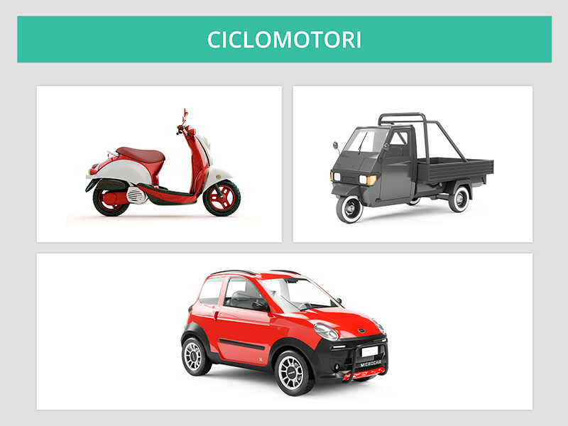

Ciclomotori

Sono veicoli:
I ciclomotori sono soggetti a revisione dopo quattro anni dalla prima immatricolazione, successivamente ogni due anni.
Attenzione non rientrano nella categoria dei motocicli.
I quadricicli leggeri (le microcar), ai fini della circolazione sono assimilati ai ciclomotori.
- a due o tre ruote
- con motore termico fino a 50 cm3
- con velocità massima su strada piana fino a 45 km/h
- possono essere dotati di cambio automatico
I ciclomotori sono soggetti a revisione dopo quattro anni dalla prima immatricolazione, successivamente ogni due anni.
Attenzione non rientrano nella categoria dei motocicli.
I quadricicli leggeri (le microcar), ai fini della circolazione sono assimilati ai ciclomotori.